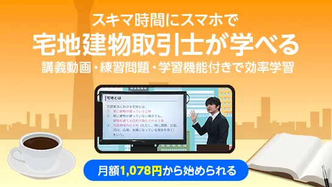
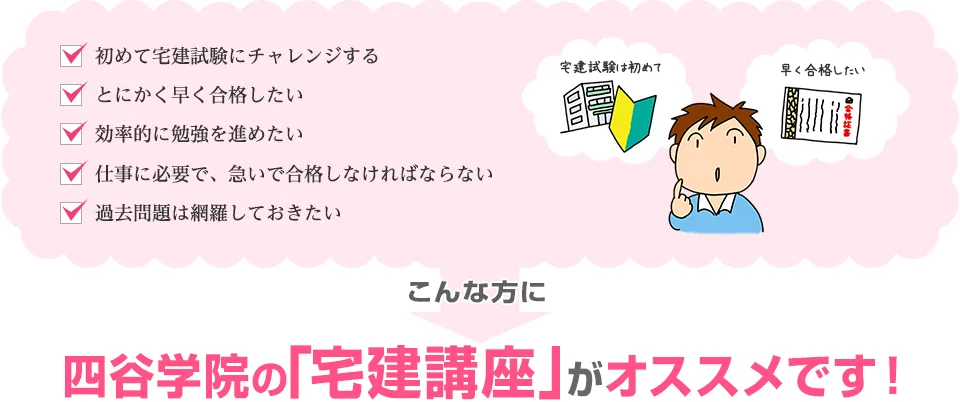

宅建士のおすすめ通信講座5選【2026年度・独学併用】
2026年10月18日試験（50問120分）を前提に、通信講座5社を学習形式・サポート・過去問併用のしやすさで比較します。料金・受講条件は申込前に各公式ページでご確認ください。
この記事の信頼性について
| 執筆 | 宅建マスター編集部（資格学習サイトの編集チーム） |
|---|---|
| 確認 | 公式情報確認担当（公開前に一次情報との照合を行う担当者） |
| 事実確認日 | 2026-06-19 |
| 主な参照元 |
16月開始：通信講座を選ぶ2つの基準
通信講座は「誰が週次計画を作るか」を補う選択肢です。たとえば6月19日の週末に、週10時間の内訳を紙1枚に書く——講座動画4時間・過去問演習4時間・復習2時間、という配分が先に決まっていれば講座の効果が出やすくなります。
| 基準 | 確認内容 |
|---|---|
| 週次計画 | 講座カリキュラムと自分の残り週数が一致するか |
| 過去問時間 | 週15問以上を講座とは別枠で確保できるか |
| サポート | 質問・添削が必要な分野（権利・業法）に届くか |
| 変更期限 | 8月15日までに1社に絞れるか |
- 7月22日から2週間
- 独学3点セットで過去問10問/週を試し
- 未達なら8月5日までに通信契約——という手順は通信・独学・通学の比較ガイドと同じ
スマホ細切れ型と教材セット型の深掘りはオンライン講座比較記事も参照してください。
おすすめ通信講座5選（比較）
料金・キャンペーン・受講期間は執筆時点（2026-06-19）の各公式ページ参考です。申込前に必ず最新条件を確認してください。試験日程・出題範囲は公益財団法人 不動産適正取引推進機構（宅建試験・公式）で必ず確認してください。
| 順位 | 講座名 | 料金（参考） | 学習期間 | 向いている人 |
|---|---|---|---|---|
| 1 | 宅建コンプリート講座 | 公式サイト参照 | 受講期間は公式参照 | 教材一式と動画で4分野をまとめて進めたい社会人独学者 |
| 2 | スタディング 宅建士合格コース［2026年度試験対応］ | ¥29,800（一括） | 2026年度合格目標（詳細は公式参照） | スマホのスキマ時間で細切れ受講し、月額分割も検討したい社会人 |
| 3 | 宅建オンライン通信講座 | 公式サイト参照 | 受講期間は公式参照 | オンライン完結で仕事と両立しながら動画学習したい人 |
| 4 | 宅建講座 | 公式サイト参照 | 受講期間は公式参照 | 予備校系の通信講座で計画立てから添削まで任せたい人 |
| 5 | 宅地建物取引士講座 | 公式サイト参照 | 受講期間は公式参照 | 資格対策ドットコムの通信で分野別に着実に進めたい人 |

宅建コンプリート講座
- コンプリート講座で業法・権利・法令・税の学習導線が一本化
- 通信で自宅学習しつつ、質問サポートで独学の詰まりを解消
- 当サイトの過去問演習と週次計画を並行しやすい

スタディング 宅建士合格コース［2026年度試験対応］
- 1動画5分～で通勤時間を活用しやすい
- 問題集・過去問・模試までコース内で完結するプランあり
- 無料体験で受講感を確認してから契約できる
無料体験あり 体験・詳細を見る

宅建オンライン通信講座
- オンライン通信で通学移動なし
- スマホ・タブレット視聴でスキマ時間を活用しやすい
- 週10時間のうち動画と過去問を分けて設計しやすい

宅建講座
- 四谷学院ブランドの通信カリキュラム
- 添削・質問などサポート重視の学習スタイル向き
- 8月15日までにスタイルを固定しやすい構成
宅地建物取引士講座
- 分野別の学習ステップが分かりやすい
- 通信講座の定番ブランドで比較検討しやすい
- テキスト1冊＋当サイト過去問との併用例が多い
25講座の比較の見方
2026年度向けに比較する5講座は、いずれも通信・オンライン中心です。料金はキャンペーンで変動するため、比較表では学習形式とサポートの違いを先に見てください。
| 提供元 | 講座名 | 形式の特徴 |
|---|---|---|
| 資格スクエア | 「宅建コンプリート講座」 | 教材一式＋動画のコンプリート型 |
| スタディング | 宅建士合格コース | スマホ完結・1動画5分～・月額分割可 |
| オンスク.JP | 「宅建オンライン通信講座」 | オンライン完結・スマホ視聴向き |
| 四谷学院 | 「宅建講座」 | 予備校ブランドの通信・サポート重視 |
| 資格対策ドットコム | 「宅地建物取引士講座」 | 分野別ステップの通信講座 |
申込前に公式ページで受講期間・解約条件・教材の有無を必ず確認してください。テキストはおすすめテキストの記事で1冊に絞り、講座は計画支援の補助に留めると教材が分散しにくいです。
31位 資格スクエア：コンプリート講座
「宅建コンプリート講座」（資格スクエア）は、4分野を教材セットと動画でまとめて進めたい人向けです。具体例として平日30分の動画2本＋土曜120分で当サイト演習15問——講座で理解した章を同週に過去問で確認するループが組みやすいです。
| 強み | 注意点 |
|---|---|
| コンプリートで学習導線が一本化 | 料金・受講期間は公式で要確認 |
| 質問サポートで独学の詰まりを解消 | 動画視聴だけでは演習量が不足しやすい |
| 社会人の週10時間設計と相性◎ | 9月以降の講座変更は非推奨 |
週次の過去問記録は4分野別に取り、弱点2分野が続く場合は講座の質問枠をその分野に集中させてください。
42位 スタディング：スマホ5分×細切れ動画
スタディング 宅建士合格コース（2026年度試験対応）は、スマホで1動画5分～の細切れ講義を積み上げるタイプです。コンプリート冊子付版は一括29,800円税込／月2,727円税込（2026-06-19 公式参考）。WEBテキスト・問題集・模試までコース内に含まれるプランがあります。
| 強み | 注意点 |
|---|---|
| 通勤・休憩のスキマで視聴しやすい | 細切れ視聴後の演習8問は省略しない |
| 月額分割で初期費用を抑えやすい | 質問はプランにより制限あり |
| 無料体験で受講感を先に確認できる | 50問120分の通し演習は別途必須 |
一例として平日15分×往復2回で動画1本、帰宅後45分で過去問5問——という週次ループと相性がよいです。オンスク.JPと迷う場合は、無料体験で1動画あたりの尺と演習の厚みを比較してください。
53位 オンスク.JP：オンライン通信
「宅建オンライン通信講座」（オンスク.JP）は、通学移動なしでオンライン完結したい人向けです。例として通勤15分×往復で動画1本、帰宅後45分で過去問5問——というスキマ時間設計と相性がよいです。
| 強み | 注意点 |
|---|---|
| オンライン完結で場所を選ばない | 倍速視聴後の演習8問は省略しない |
| スマホ・タブレット視聴 | 動画時間の上限（週3時間など）を決める |
| 繁忙期に学習量を調整しやすい | 50問120分の通し演習は別途必須 |
動画教材の使い方全般は動画教材ガイドも参照し、講座動画とYouTubeの役割分担を先に決めてください。
64位・5位 四谷学院と資格対策ドットコム
添削・質問を厚く使いたい人向けに四谷学院、分野別ステップで着実に進めたい人向けに資格対策ドットコム——この2社はサポート設計が対照的です。
四谷学院（宅建講座）は予備校ブランドの通信講座。火曜・木曜に講座課題、土曜に過去問10問＋誤答解き直し——という週次リズムを固定しやすい構成です。添削待ち時間を週次計画に入れる点が独学との差になります。
資格対策ドットコム（宅地建物取引士講座）は分野別ステップ型。6月は業法・7月は権利——と月単位で分野を固定し、各月末に当サイト演習で正答率を記録する進め方と相性がよいです。テキスト1冊と役割が重複しないよう、主教材を1系統に絞ってから契約してください。
7過去問演習との併用と申込前チェック
講座は理解の補助、過去問は定着と弱点洗い出し——役割を分けると費用対効果が上がります。具体例として9月から週1回の50問120分通し演習を入れ、講座で学んだ週は同分野の過去問10問を必ず解く、というルールが定番です。
| 申込前チェック | 確認内容 |
|---|---|
| 料金 | 通常料金・キャンペーン条件・受講期限 |
| 教材 | 紙/Webの有無と追加費用 |
| サポート | 質問・添削の回数制限と返答日数 |
| 契約 | 解約・返金規定 |
9月以降の講座変更は過去問2周の時間が不足しやすいため、8月15日までに1社へ絞ってください。演習の進め方は宅建の過去問の使い方・効果的な解き方を解説、問題集は宅建士のおすすめ問題集3選を参照してください。
8よくある質問
通信講座なしで合格できますか？
途中で独学から通信に変えてもよいですか？
5講座のうちどれを選べばよいですか？
記事の基本情報
| ジャンル | 独学対策 |
|---|---|
| タグ | 通信講座 / 独学 |
公式情報の確認
公式情報の確認：宅地建物取引士試験の最新情報は、不動産適正取引推進機構（RETIO）などの公式情報を必ず確認してください。本人に割り当てられた試験会場は受験票の表記が正本です。